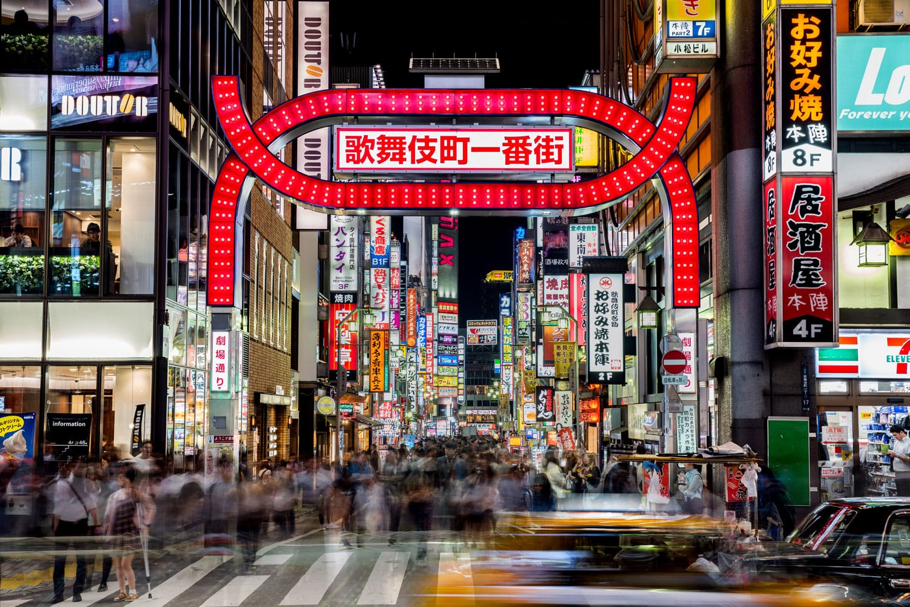

Paris
Paris, the capital of France, is a city renowned for its timeless elegance, rich history, and cultural significance. Known as the "City of Light," Paris is a global center for art, fashion, gastronomy, and literature. Paris is one of the planet's most desired destinations. From its Haussmann-designed boulevards to the winding backstreets of the Marais and Montmartre, Paris' history as a center of culture, ideas and arresting architecture remains undimmed. Sip coffee in Place des Voges; browse for books on the banks of the Seine at Shakespeare and Co.; eat classic French dishes in a bistro in St Germain; or spend an afternoon people watching in the Jardin du Luxembourg. Throw in sights from the Louvre to Notre Dame, Les Invalides to the Eiffel Tower, and you're looking at the world's most picture-perfect city.

The Arc de Triomphe
The Eiffel Tower
The Louvre Museum
Scenary
- Eiffel Tower
- Louvre Museum
- Notre Dame Cathedral
- The Arc De Triomphe
Osaka
Osaka, located in the Kansai region of Japan, is a dynamic and modern city known for its vibrant atmosphere, delicious street food, and historical landmarks. It has been the economic powerhouse of the Kansai Region for many centuries. Osaka was formerly known as Naniwa. Before the Nara Period, when the capital used to be moved with the reign of each new emperor, Naniwa was once Japan's capital city, the first one ever known.

Osaka castle

Dotonbori

Ebisubashi-suji Shopping Street
Scenary
- Osaka castle
- Dotonbori
- Ebisubashi-suji Shopping Street
Tokyo

Tokyo (東京, Tōkyō) is Japan's capital and the world's most populous metropolis. It is also one of Japan's 47 prefectures, consisting of 23 central city wards and multiple cities, towns and villages west of the city center. The Izu and Ogasawara Islands are also part of Tokyo. Today, Tokyo offers a seemingly unlimited choice of shopping, entertainment, culture and dining to its visitors. The city's history can be appreciated in districts such as Asakusa and in many excellent museums, historic temples and gardens. Contrary to common perception, Tokyo also offers a number of attractive green spaces in the city center and within relatively short train rides at its outskirts.

Tokyo kabukicho
Tokyo Kaminarimon Gate

Tokyo shibuya sky
Scenary
- Tokyo Kabukicho
- Tokyo Kaminarimon Gate
- Tokyo Shibuya Sky
- Tokyo Akihabara
New York

New York, often called New York City or simply NYC, is the most populous city in the United States, located at the southern tip of New York State on one of the world's largest natural harbors.
It's famous for its tall buildings, like the Statue of Liberty and Times Square. There are lots of different neighborhoods with different cultures, and you can find everything from fancy shops in Manhattan to cool art in Brooklyn.

The Brooklyn Bridge
The Statue of Liberty
Times Square in the Midtown Manhattan
Scenary
- Manhattan: Skyscrapers and Urban Jungle, Central Park
- Brooklyn: Brooklyn Bridge, Coney Island
- Queens: Flushing Meadows-Corona Park
- Bronx: The Bronx Zoo
- Staten Island: Staten Island Ferry
Monteverde
Monteverde is the twelfth canton of the Puntarenas province of Costa Rica. It is located in the Cordillera de Tilarán mountain range. Roughly a four-hour drive from the Central Valley, Monteverde is one of the country's major ecotourism destinations.

Humming birds in Monteverde

hanging bridges in Monteverde
Cloud forest in Monteverde
Scenary
- hanging bridges
- Beautiful birds
- Cloud forest